◉ Portas Lógicas
➤ Um sistema digital é um sistema matemático que define informações como valores numéricos.
Dessa forma, é possível definir operações digitais como cálculos matemáticos. Comumente
trabalhamos com valores numéricos na base decimal, mas um sistema digital trabalha de maneira
diferente. Em analogia ao sistema decimal, onde cada dígito possui 10 valores possíveis, um
sistema digital é um sistema binário, onde cada dígito possui apenas 2 valores possíveis.
Esses dois valores são definidos como “níveis lógicos” e adota-se o valor de 0 (zero) ou 1
(um) apenas.
Transportando esse sistema para um sistema eletrônico, é necessário apresentar esses dois
valores como sinais elétricos. Para tanto, podemos entendê-los como:
■ Ligado ou desligado;
■ Nível alto ou nível baixo;
■ Alimentado ou em zero;
■ VCC ou Terra.
As operações observáveis para esses níveis lógicos são definidas como operações lógicas.
Todas as possíveis operações lógicas são baseadas em apenas 3 operações primárias, que são:
■ Inversão;
■ Soma lógica;
■ Produto lógico.
Tabela Verdade
A Tabela Verdade trata-se de uma técnica para determinar como a saída lógica de um determinado
circuito depende dos níveis lógicos presentes nas entradas de cada circuito. Ela está
representada neste texto do lado direito das imagens, ao lado das portas lógicas.
➤ Porta Lógica NOT
A porta NÃO ou inversora (NOT) utiliza o operador de inversão. Para um determinado valor na
entrada, a saída possui um valor contrário ao da entrada. Se a entrada for 1, a saída será 0.
Se a entrada for 0, a saída será 1. Ou seja, para um valor na entrada a saída será seu
complemento, ou o inverso do valor na entrada.
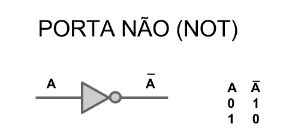
➤ Porta Lógica AND
Para se explicar o funcionamento da porta E (AND) pode-se fazer um paralelo com um circuito
com interruptores, como na figura abaixo. Para que a lâmpada acenda é preciso que os dois
interruptores estejam ligados.
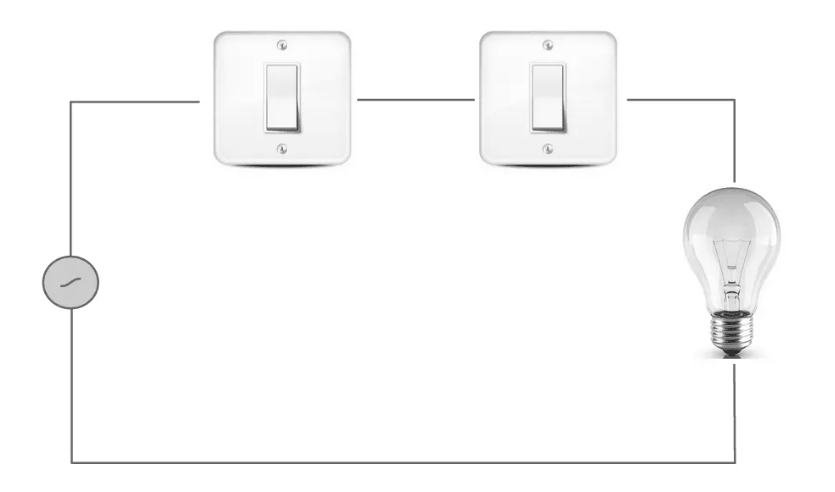
As portas lógicas E (AND) utilizam-se do operador de produto lógico. A saída é igual a 1 se
todas as entradas for 1. A saída é igual a zero se ao menos uma entrada for 0, se todas
entradas não forem 1.
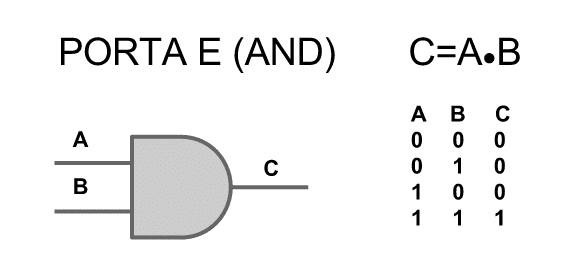
➤ Porta Lógica OR
Uma forma simples de se entender o funcionamento da porta OU (OR) é pensar em um circuito com
interruptores em paralelo, como na figura abaixo. Para que a lâmpada acenda é preciso que um
dos dois interruptores esteja ligado.
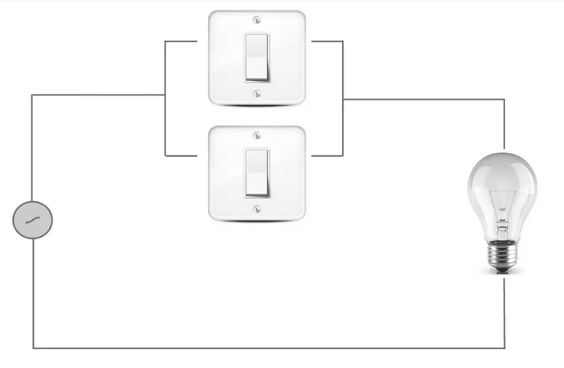
A porta lógica OU (OR) utiliza-se do operador de soma lógica. A saída é igual a 1 se pelo menos
uma das entradas for 1. A saída é igual a zero se nenhuma entrada for 1, todas forem zero.
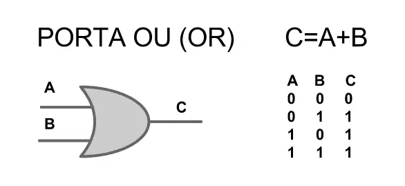
➤ Porta Lógica NAND
A porta lógica NÃO E (NAND) utiliza-se do operador de produto lógico e o de inversão.
A saída é igual a 0 se todas as entradas for 1. A saída é igual a 1 se ao menos uma entrada
for 0, se todas entradas não forem 1.
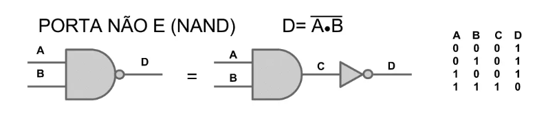
➤ Porta Lógica NOR
A porta lógica NÃO OU (NOR) utiliza-se do operador de soma lógica e o de inversão.
A saída é igual a 0 se pelo menos uma das entradas for 1. A saída é igual a 1 se nenhuma
entrada for 1, todas forem zero.
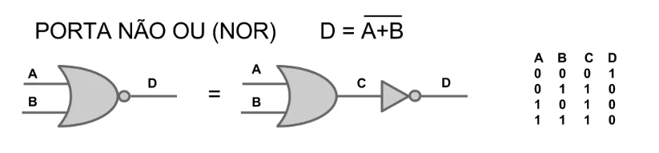
➤ Porta Lógica XOR
As portas lógicas OU EXCLUSIVO (XOR) utilizam-se do operador de soma lógica, com um círculo.
A saída é igual a 0 se as entradas forem iguais. A saída é igual a 1 se as entradas não forem
iguais, se uma delas diferirem das outras.
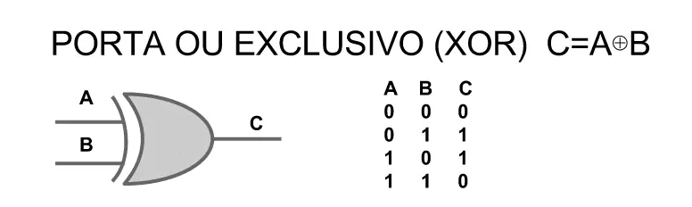
➤ Porta Lógica XNOR
As portas lógicas NÃO OU EXCLUSIVO (XNOR) utilizam-se do operador de soma lógica, com um
círculo e o de inversão. Tem as saídas inversas da operação XOR. A saída é igual a 1 se as
entradas forem iguais. A saída é igual a 0 se se as entradas não forem iguais, se uma delas
diferirem das outras.
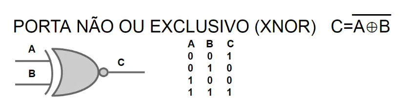
◉ Propriedades da Álgebra Booleana
• Postulados
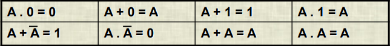
• Propriedade Comutativa
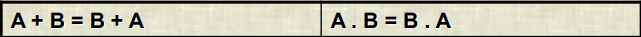
• Propriedade Associativa
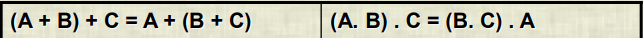
• Propriedade Distributiva
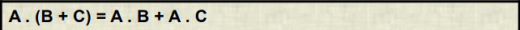
• Teorema de De Morgan
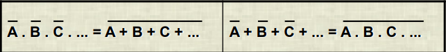
➤ Aplicando os postulados e leis da álgebra Booleana as funções Booleanas
podem ser minimizadas
– O circuito equivalente pode ser menor
– Variáveis de entrada podem ser eliminadas da função equivalente
• Exemplos:
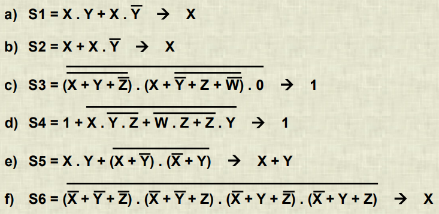